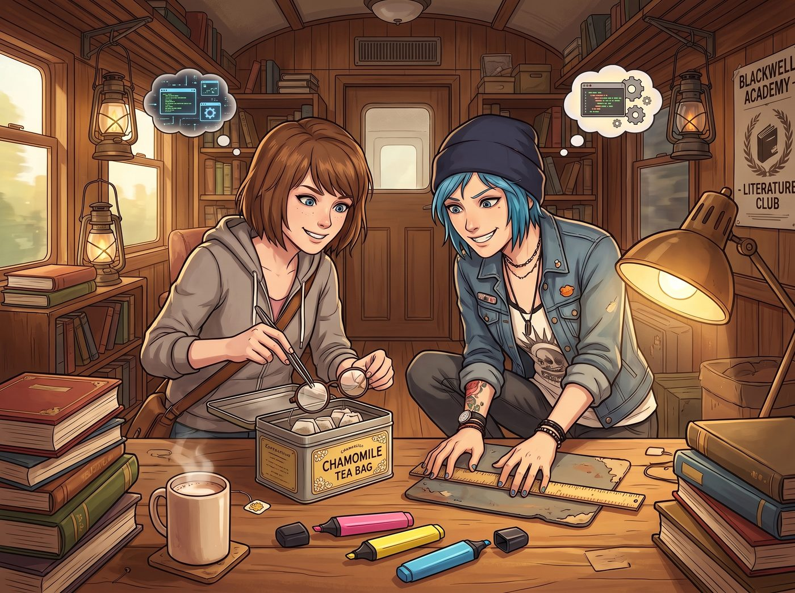

微觀駭客報復

比起粗暴地把帶有煙味的紙巾塞進實習生的睡衣口袋，Chloe 和 Max 選擇了一種更符合高維度心理戰的報復方式。
為了報復那張高達一千八百五十美金的洗衣機罰單，兩個大頭蝦展現出了前所未有的細心，對 Lily 那個精確到毫米的工作台進行了微觀物理駭客攻擊。
一、完美的微調與記憶碎片
她們沒有搞破壞，只是進行了極度細微的排列組合：把 Lily 最常用的三色螢光筆的筆蓋互相調換；將她的滑鼠墊向左平移了精確的兩公分；把裝著熱牛奶的馬克杯把手，從指向四點鐘方向旋轉到了六點鐘方向；甚至把她備用的那副圓框眼鏡，悄悄塞進了裝著洋甘菊茶包的鐵罐裡。
這對普通人來說根本不會察覺，但對 Lily 這個將現實世界視為絕對網格的行政怪物來說，這無異於底層代碼出現了亂碼。
下午，當 Lily 坐回工作台時，異樣發生了。她伸手去拿紅色的螢光筆，畫出來的卻是螢光綠；她習慣性地去握滑鼠，手腕卻磕在了桌子邊緣；當她想喝牛奶時，手指在原本應該有把手的位置抓了個空。
實習生愣住了。
在二號車廂裡，Lily 擁有一種近乎傲慢的安全自信。她深知這裡沒有任何外部監控，而她對團隊的物理隔離防禦有著絕對的信任。因此，她腦海中閃過的第一個念頭，根本不是有人惡作劇，而是我的大腦運算中樞出現了硬體故障。
Lily 微微皺起眉頭，眼神裡第一次出現了屬於人類的迷茫。她轉過頭，看向正癱在沙發上假裝玩遊戲的 Chloe。
「Price 學姐，」Lily 軟糯的聲音裡帶著一絲罕見的不確定，「請問您在過去的四十五分鐘內，有觀察到我出現過夢遊或無意識的重複性動作嗎？比如……把我的備用眼鏡放進茶葉罐裡？」
二、街頭霸王的惡意引導
Chloe 差點笑出聲，但她死死咬住舌頭，硬是憋出了一副極度嚴肅且擔憂的表情。
「老天，Lily，妳終於發現了？」Chloe 放下遊戲機，走過去，用一種我原本不想告訴妳的沈重語氣說道：「其實我這兩天就想跟妳說了。妳最近總是一個人對著空氣發呆，剛才妳泡茶的時候，嘴裡還唸唸有詞地說著什麼反壟斷法的多維度折疊，然後就把眼鏡塞進了茶葉罐。妳是不是最近做空華爾街太累，腦神經短路了？」
Lily 的臉色瞬間變得蒼白。對於一個將大腦和邏輯視為唯一武器的人來說，記憶碎片化和認知失調，比拿槍指著她的頭還要讓她恐懼。
「這不可能……我的快速動眼期睡眠數據一直保持在最優區間……」Lily 喃喃自語，手指有些發抖地推了推臉上的眼鏡，「難道是昨晚修復聯邦航空底層代碼時，過度調用短期記憶區，導致了海馬迴的神經元突觸疲勞？」
「很有可能啊，實習生。」Chloe 繼續無情地添油加醋，「妳剛才連拿杯子的手勢都像個中風的七十歲老太太。妳真的得注意一下了。」
三、從自我懷疑到硬核處方
Lily 沉默了。她沒有哭，也沒有崩潰，而是立刻將恐懼轉化為了極端理性的自救行動。
她轉過身，十指在鍵盤上化作殘影，直接駭入了西雅圖某醫療中心的內部處方系統。
「既然發現了硬體故障，就必須立刻進行化學干預。」Lily 的大眼睛裡閃爍著一種近乎瘋狂的臨床醫學光芒，語速快得驚人：「我正在為自己開具最高劑量的中樞神經興奮劑，配合大劑量的記憶改善藥物。我還需要順便偽造一位神經內科主任的數位簽名，讓無人機在半小時內把這些精神類管制藥物空投到車廂外面——」
四、文青的崩潰與自首
「住手！！！不要吃藥！！！」
躲在廚房中島後面偷看這一切的 Max，嚇得魂飛魄散，連滾帶爬地衝了出來。
她原本以為這只是一場無傷大雅的惡作劇，能看看這個無所不能的實習生吃癟的可愛模樣。但她萬萬沒想到，Lily 的容錯率居然是零！稍微懷疑一下自己的記憶，這傢伙居然就要駭進醫院給自己開足以吃成精神病的處方藥！
Max 衝過去，一把按住了 Lily 即將敲下發送處方的回車鍵。
「對不起！Lily！沒有神經疲勞！沒有阿茲海默！是我們幹的！」Max 欲哭無淚地指著那堆被調換的筆蓋和馬克杯，「是 Chloe 提議的！我們偷偷動了妳的東西！妳的大腦非常完美，一點毛病都沒有！求求妳把那個駭客系統關掉，別吃那些會破壞神經的藥！！」
Lily 停下了動作。她看了看滿臉驚恐的 Max，又看了看在沙發那邊笑得直不起腰的 Chloe。
那一瞬間，實習生眼底的迷茫與恐慌如潮水般退去，取而代之的，是一種令人毛骨悚然的、極致平靜的恍然大悟。
「原來如此。」
Lily 輕輕關掉了醫院的處方系統，將那支筆蓋顏色不對的螢光筆放回原處。她溫柔地推了推圓框眼鏡，嘴角緩緩勾起了一抹比平時更加甜美、卻充滿了無盡殺意的微笑。
「兩位學姐，我必須承認，妳們成功利用了我的內部安全信任冗餘，對我實施了一次非常精彩的物理環境欺騙與心理煤氣燈效應。」
Lily 拿起平板電腦，軟糯的聲音像是一首地獄的搖籃曲：「但根據二號車廂的反精神破壞與內部欺詐條例，對首席法務顧問進行未經授權的認知干擾，屬於一級重罪。因此——」
「等等！Lily！有話好說！」Chloe 的笑聲戛然而止，意識到事情大條了。
「——因此，我已經鎖死了 Chloe 學姐遊戲帳號的底層伺服器IP，並將 Max 學姐所有未沖洗底片的線上數位備份加密成了不可逆的亂碼。」Lily 乖巧地雙手交疊，眼神純潔無暇，「直到下個月的今天，妳們才能重新獲得這些資產的存取權。現在，請妳們把我的筆蓋，按照光譜波長的順序，一個一個換回來。有一點偏差，我就把妳們的洗衣機罰單再翻三倍。」
Max 絕望地拿起那些螢光筆，而 Chloe 則看著自己顯示連線錯誤的遊戲機，發出了比宿醉還要痛苦的慘叫。這場微觀駭客戰，最終還是以行政黑魔法的全面碾壓而告終。